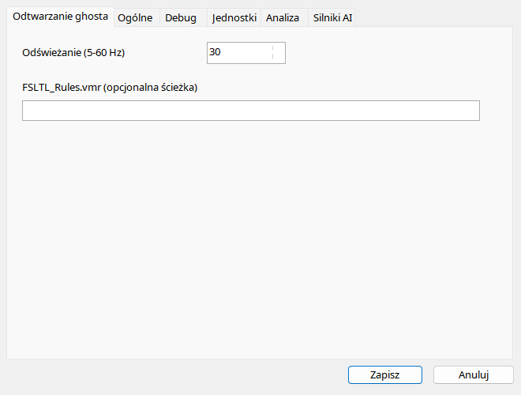

Najpierw wczytaj lot w obs³ugiwanym MSFS 2024, nastêpnie wybierz nagranie do odtworzenia. Ghost ma w³asne po³¹czenie i w¹tek; zwyk³y odtwarzacz analizy pozostaje osobny. Przed zmian¹ pliku lub sesji zatrzymaj ghosta, aby usun¹æ jego obiekt. Dopasowanie AIG/FSLTL korzysta z modeli rzeczywiœcie zainstalowanych w Community; sam plik VMR ich nie instaluje. Niezgodny model mo¿e mieæ mniej animacji, nawet przy kompletnych próbkach.
Ghost jest wizualnym samolotem AI w dzia³aj¹cym symulatorze. Nie steruje samolotem u¿ytkownika i nie uruchamia awioniki oryginalnego dodatku.
| Opcja / czynnoœæ | Dzia³anie i ograniczenia |
|---|---|
| Odtwórz / pauza | Uruchamia/zatrzymuje wstrzykniêty samolot. Wymaga za³adowanego lotu i SimConnect, w odró¿nieniu od analizy offline. |
| Stop | Zatrzymuje i usuwa obiekt. U¿yj przed zmian¹ nagrania lub sesji. |
| Wstecz / naprzód | Przesuniêcie ghosta o 10 sekund, niezale¿nie od skoków 30-sekundowych zwyk³ego odtwarzania. |
| Odœwie¿anie | 5–60 Hz, domyœlnie 30. Wy¿sze wartoœci zwiêkszaj¹ liczbê aktualizacji, nie gêstoœæ oryginalnych próbek i nie gwarantuj¹ wydajnoœci symulatora. |
| Model | Dobierane s¹ zainstalowane AIG/FSLTL wed³ug typu i malowania, z fallbackiem do modeli AI. Model musi faktycznie istnieæ w Community. |
| VMR | Opcjonalny FSLTL_Rules.vmr podaje regu³y dopasowania. Puste pole oznacza automatyczny dobór. VMR nie instaluje modeli. |
| Animacje | Pozycja, orientacja, podwozie/klapy/spoilery, stery, silniki, œwiat³a i reversy zale¿¹ od danych oraz zapisywalnych wejœæ modelu. Zastêpczy model mo¿e pokazywaæ mniej. |
